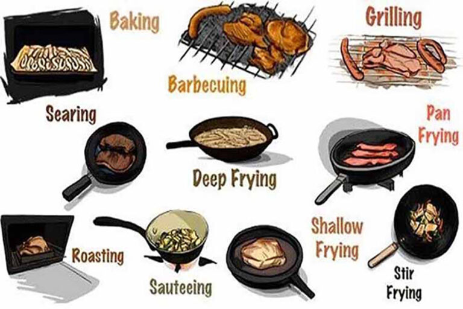
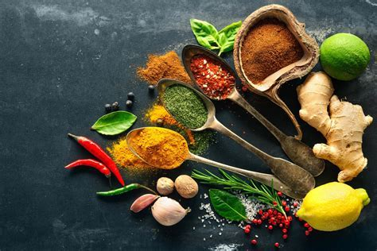

Basic Techniques
Learn the essential cooking techniques that every home cook should know. From chopping vegetables to searing meat, these tips will help you become more confident in the kitchen.
Advanced Techniques
Take your cooking skills to the next level with these advanced techniques. Learn how to make homemade pasta, perfect your baking skills, and more.
Kitchen Tools
Discover the must-have kitchen tools that will make your cooking experience more enjoyable. From high-quality knives to versatile cookware, these tools are essential for any home cook.

Ingredient Substitutions
Learn how to make ingredient substitutions in your recipes. Whether you're out of a specific ingredient or looking for a healthier alternative, these tips will help you make the perfect swap.
